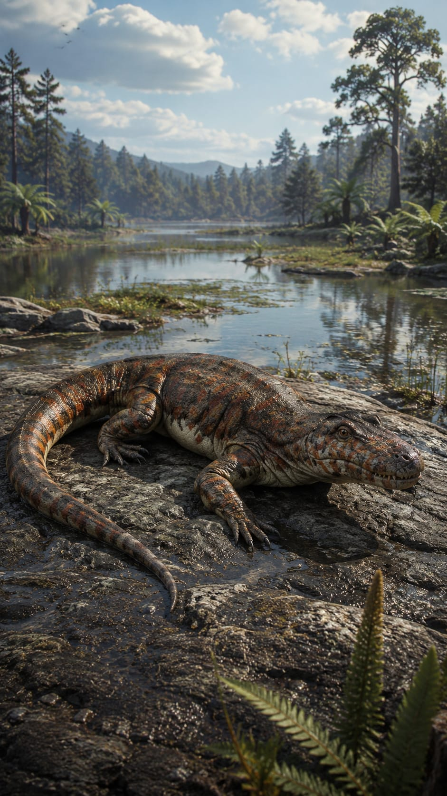
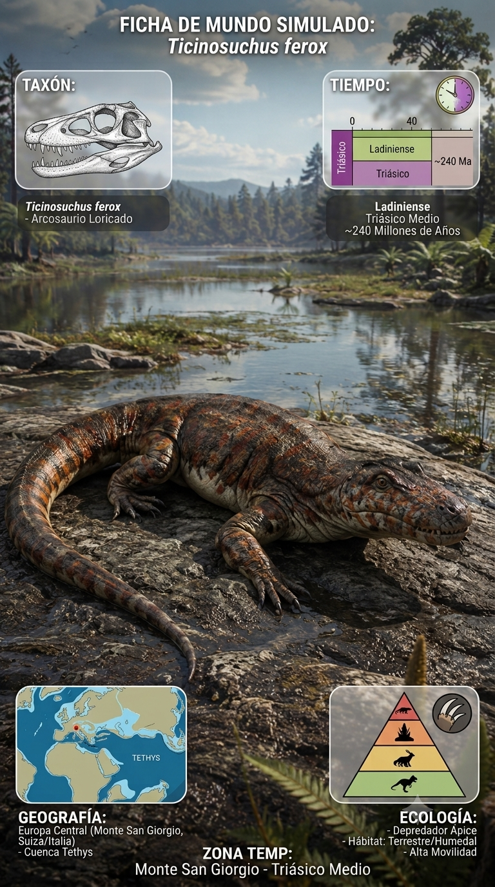
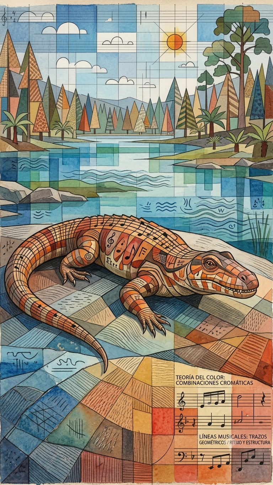
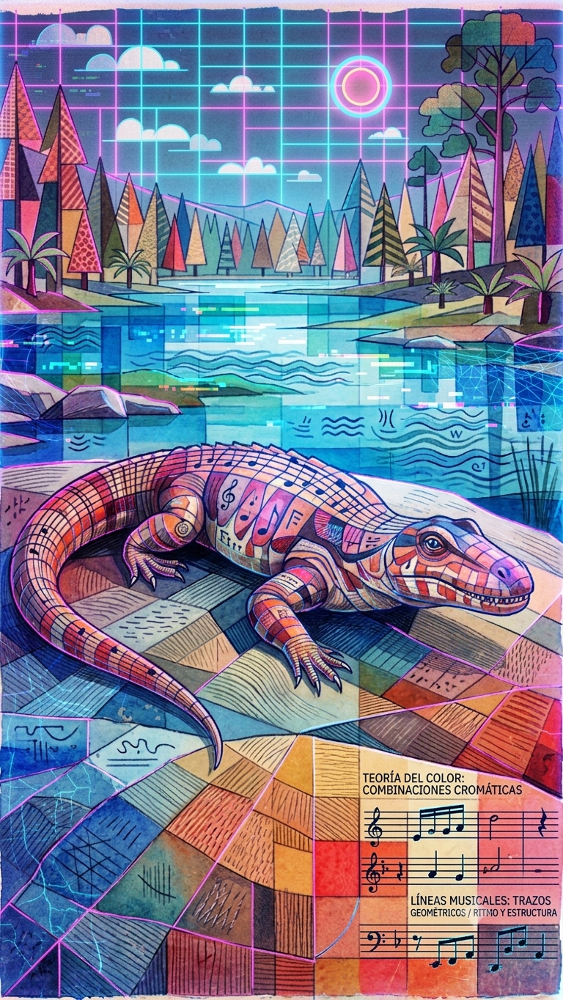

Paleoficha de Ticinosuchus




Periodo: Triásico Medio
Edad: Hace aproximadamente 240 millones de años.
Dieta: Carnívoro.
Distribución: Formación Besano, Monte San Giorgio (Región Alpina).
TAXÓN:
Ticinosuchus ferox (Loricata, Archosauria). Arcosaurio depredador de cuerpo robusto y extremidades erguidas, considerado uno de los pseudosuquios más representativos del Triásico Medio.
TIEMPO:
Triásico Medio (Anisiense), hace aproximadamente 240 millones de años.
GEOGRAFÍA:
Formación Besano, Monte San Giorgio (Región Alpina). Ecosistemas insulares y costas tropicales situados en el margen del mar de Tetis.
ECOLOGÍA:
Habitaba plataformas marinas someras, lagunas costeras y tierras emergidas próximas. Compartía el ecosistema con reptiles marinos como Placodus y Tanystropheus, además de numerosos peces. Actuaba como depredador dominante en tierra firme y en aguas muy poco profundas, regulando las poblaciones de pequeños reptiles y otros vertebrados.
CLIMA:
Wm10 (Marino costero). Tropical, cálido y húmedo, con escasa variación estacional.
ESTADO ECOLÓGICO:
Estable. Representa una fase clave de la diversificación de los pseudosuquios tras la extinción del Pérmico-Triásico, mostrando adaptaciones avanzadas hacia una locomoción terrestre eficiente.
Vídeo PalEntropía:
▶ Ver Short en YouTube